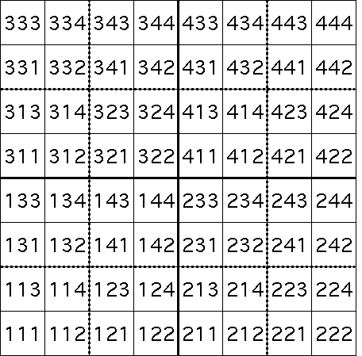

Addresses in fractals
Longer addresses
Because each T
i
is a contraction, longer addresses specify
smaller portions
of S. For example, here are the length 3 addresses for the square transformations.
T
3
(x, y) =
(x/2, y/2)
+
(0, 1/2)
T
4
(x, y) =
(x/2, y/2)
+
(1/2, 1/2)
T
1
(x, y) =
(x/2, y/2)
T
2
(x, y) =
(x/2, y/2)
+
(1/2, 0)

Return to
Addresses in fractals